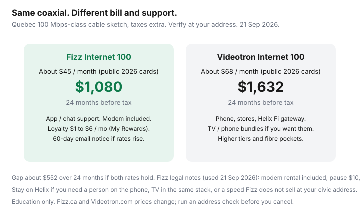

Internet · Canada
Fizz vs Videotron Home Internet in Québec: Same Network, Different Bill Math
In much of Québec, Fizz and Videotron are not two networks. Fizz is Videotron’s digital flanker on the same coaxial (and, where Videotron has built it, the same fibre-fed plant). Households still overpay a Helix promo — or stay after the promo — without asking whether $45-class Fizz 100 exists at the civic address. The save is real. So is the support trade-off.
This is Québec bill math, not a national ISP roundup. Run Bell Fibe and independents on the same three-quote sheet if they qualify. Education only; Fizz.ca said current offers were valid until 30 September (page used 21 Sep 2026).
Disclosure: No Fizz or Videotron partnership. Mesh Wi-Fi systems and a better Wi-Fi router are offer types if the included modem-router radio is weak; we may later add partner links. We do not currently claim hardware or ISP commissions. Confirm live prices after an address check.
Key takeaways
- Fizz homepage (21 Sep 2026): plans start at $40/month for 30 Mbps; modem-router included (stated value $225); unlimited usage; app-managed Wi-Fi; no phone support.
- 2026 comparison cards commonly list Fizz 100 about $45 and Fizz 500 about $55 versus Videotron Internet 100 about $68, 500 about $75, GIGA about $80. Verify on both address tools.
- Fizz legal notes: monthly rate unchanged unless you change the plan or a general increase is emailed at least 60 days ahead. Pause costs $10, twice a year, up to six months each.
- Loyalty (My Rewards): Fizz copy says $1/month from day one, up to $6 at level 10 — small, but it is not a 12-month cliff.
- Keep Helix if you need a human on the phone, TV/phone in one stack, or a tier Fizz does not sell at your civic address.
Fizz as Videotron flanker: identical cable plant, different support model
The drop in the basement, the node, the DOCSIS version — Videotron engineering. Fizz sells a thinner product: pick a speed, self-install, live in the app. Videotron Helix sells the same plant plus stores, phone support, Helix Fi whole-home positioning, and TV/phone bundles.
If your outage is plant-level, both brands wait on the same trucks. If your problem is “Wi-Fi in the back bedroom,” Fizz wants you in the Fizz Wi-Fi app (devices, guest network, speed test, chat). Videotron will let you phone a person. That difference is most of the price gap.
Flat-ish Fizz pricing vs Videotron Helix promo cliffs
Fizz’s own FAQ: “Home Internet plans start at $40/month with the 30 Mbps plan.” Comparison sites in 2026 cluster Fizz 100 near $45 and Fizz 500 near $55, no fixed term. Videotron.com legal blurbs (used 21 Sep 2026) still describe Helix offers with lifetime-style $3 discounts, $75 credits, included Helix Fi rental, GIGA at 1 Gbps down / 50 Mbps up on hybrid fibre-coax, $99 extra if a tech install is required, self-install free where permitted. Public 2026 cards for Helix Internet 100 / 500 / GIGA / 2.5 GIGA around $68 / $75 / $80 / $90 are the usual comparison set — not a substitute for the Videotron address tool.
Videotron also runs time-limited credits and bundle discounts that look cheaper than Fizz in month one and worse in month 14. Normalize 24 months. Fizz is “flat-ish”: no classic 12-month teaser in their legal notes, but they reserve the right to raise rates with 60 days’ email. That is closer to a utility notice than to Rogers list-price theatre — still not a constitutional freeze.

Modem-router quality and when to add your own AP or mesh
Fizz includes the Wi-Fi modem; rental is in the monthly; they state a $225 equipment value. Videotron includes Helix Fi gateway rental on qualifying Helix internet. Neither situation is “buy a random DOCSIS modem off Amazon.” Québec Videotron plant has its own approved-device history if you ever leave for a TPIA.
If the radio is the problem, keep the ISP modem for the WAN and add a router or mesh you control — ethernet backhaul if you can run a cable. That is the usual hybrid. A $200 mesh can be cheaper than staying on Helix “for the Wi-Fi pods” if Fizz’s plant speed already matches the household.
App-only support trade-offs for WFH households
Fizz is explicit: no phone number; Rob 24/7; humans 8 a.m.–1 a.m. ET on secure messaging. Fine for a household that will screenshot a modem light and wait in chat. Painful if a parent needs a voice, French or English, during a Monday standup outage, or if you refuse to troubleshoot without a ticket number spoken aloud.
WFH test: can every earner in the home live with chat-only for a two-day plant incident? If no, the Helix premium is labour insurance, not ignorance. If yes, paying $68 for 100 Mbps on the same coax is a habit.
Fizz pause (vacation/move): $10 plus tax per pause, max two per calendar year, max six months each, then the same price resumes. Useful for students and snowbirds; still not a reason to skip the address check.
24-month TCO worksheet in CAD
| Line | Fizz 100 sketch | Videotron 100 sketch |
|---|---|---|
| Monthly × 24 | $45 × 24 = $1,080 | $68 × 24 = $1,632 |
| Loyalty | Minus $1 to $6/mo if My Rewards applies | Bundle/TV credits if you actually want TV |
| Equipment | Included; return if you leave | Helix Fi included on qualifying plans; return rules apply |
| Install | Self-install in price; VIP extra | Self-install free where permitted; $99 if a tech visit is required |
| Support you are buying | App / chat | Phone, stores, Helix stack |
| Gap if rates hold | About $552 before tax, before loyalty — real money, not a rounding error | |
Add Bell Fibe if the suite has it: symmetrical uploads can beat both cable brands for creators and heavy cloud backup even at a higher monthly. Do not skip that row because Fizz is trendy.
Who should stay on Helix (TV, phone support, higher tiers)
Stay or return to Videotron when:
- You use Helix TV or landline in a way that Fizz TV à la carte (from $19/month on Fizz’s page, internet members only) will not replace.
- You need a phone agent and a store.
- You want 2 GIGA / 2.5 GIGA or fibre-to-the-home Videotron sells and Fizz does not qualify at the address.
- A written Videotron 24-month number actually beats Fizz after credits — rare if you only need 100–500 Mbps, possible with a fat TV bundle you already pay for.
Switch when the household is internet-only, chat-tolerant, and the address tool shows Fizz 100 or 500. Keep ethernet in mind before you “need” GIGA for Wi-Fi laptops.
Sources & date stamps
- Fizz.ca/en/internet — $40 start at 30 Mbps; included modem ($225 value); app-only support hours; 60-day rate-increase notice; pause $10; offers noted until 30 Sep on the page used 21 Sep 2026.
- Videotron.com/en/internet — Helix Fi included language; GIGA 1 Gbps/50 Mbps on HFC; $99 tech install; self-install free where permitted (used 21 Sep 2026).
- 2026 Québec comparison cards (PlanGenius / ShopLikeSam) — Fizz 100/500 and Videotron 100/500/GIGA clusters. Confirm live.
- r/FizzMobile and r/PersonalFinanceCanada — support-model anecdotes, not speed guarantees.
Frequently asked questions
Is Fizz slower because it is cheaper?
Not by design. Fizz rides Videotron’s cable plant. Congestion at 8 p.m. is a node story, not a brand story. You can still lose speed to a weak in-suite radio — that is gear, not Fizz vs Helix physics.
Can I call Fizz if the internet dies on a Sunday?
Fizz says customer service is 100% online: Rob the virtual assistant 24/7, agents on secure messaging 8 a.m.–1 a.m. Eastern, plus FAQ and community forum. There is no phone number. If that is unacceptable, stay on Videotron or pick another ISP with a voice queue.
Does Fizz’s price never change?
There is no 12-month ‘promo then list’ gimmick in Fizz’s own notes. They also say the monthly price stays unchanged unless you change the plan or a general increase is emailed at least 60 days ahead. That is not the same as Oxio’s marketing ‘no price hikes’ forever. Read the notice if it comes.
Who should keep Helix?
Households that want phone support and stores, Helix TV in one stack, a gateway they already understand, or a speed/fibre tier Fizz does not sell at the address. Paying ~$23/month extra for a person to call is a valid purchase.
Can I add my own Wi-Fi on Fizz?
Often yes in spirit: put the Fizz modem in the best location, then add ethernet to a router or mesh you control. Confirm bridge/AP options in the Fizz Wi-Fi app docs. Do not assume every ISP modem has a clean bridge toggle.